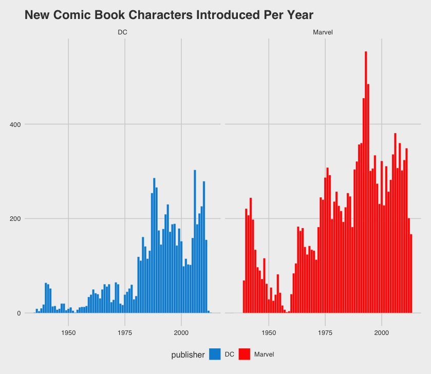
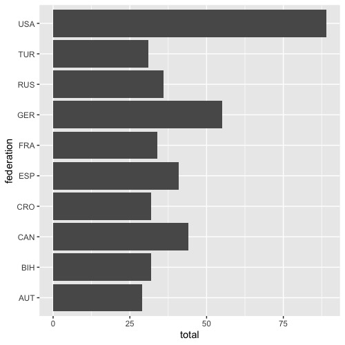
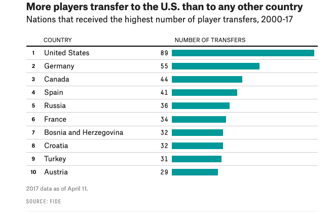

For this assignment, we’ll be reproducing graphics from FiveThirtyEight. I chose FiveThirtyEight for a couple of reasons. First, I think they make very clear data graphics. And then perhaps more importantly, they make their data public, so it will be easier for us to reproduce their work.
For the first step of this assignment, you will be identifying a graphic you want to reproduce. Start at the Our Data page and find a graphic that interests you and you think is possible to reproduce. This is mostly a “thinking step,” rather than a coding one, although you may want to start playing around in ggplot2 to see if your guess is right. Plots that will be easier to reproduce are the more standard ones (histograms, line charts, scatterplots, etc). I looked through quickly and thought the following would be pretty doable:
Potentially doable:
On the scale of hard-to-not-doable:
All of these may require a bit of data wrangling before you can get to the graphing data part. I had intended to push off data wrangling for a bit, but it looks like we’re going to need to talk about it!
You can’t choose either of the first two graphics from Comic Books Are Still Made By Men, For Men And About Men, because I’ve used that as an assignment recently and will be using it as an example.
Your next step is to do the quick, sketchy version of your graphic in code. Here’s an example from a past class.
library(tidyverse)
library(fivethirtyeight)
library(ggthemes)
data("comic_characters")ggplot(comic_characters) +
geom_histogram(aes(x = year, fill = publisher), binwidth = 1, color = "white", lwd = 0.1) +
facet_wrap(~publisher) +
theme_fivethirtyeight() +
scale_fill_manual(values = c("#008fd5", "#ff2700")) +
labs(title = "New Comic Book Characters Introduced Per Year")
For the first draft, I want you to upload a .html file knitted from a .Rmd file. It doesn’t have to have many lines of code in it (in fact, I think a good draft usually only takes 6 or so lines!), but it should include a version of your visualization that is at least part of the way to reproducing the original graphic. In particular, it should be the right “form” of graph (if the original is a barchart, it should be a barchart, not a scatterplot!). It’s okay if there are more categories than the original, or if the axes are off, etc.
Here’s another example, of an original graphic from 538 and what I would consider a draft of the graphic.


There’s a lot missing in the draft– it doesn’t have the right colors, the names still aren’t right, and the order is off! But it’s the correct “form” of graphic.
The last piece is to get your graphic to look as similar to the original as possible. We’ll do some peer editing and I will provide feedback about things that I notice that should be matched, and we’ll demo this on the example graphic as well.